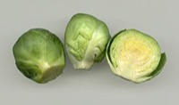

芽キャベツの生産量 都道府県ランキング
全6都道府県の順位と収穫量
芽キャベツの収穫量が全国で最も多いのは静岡県で、254 tです。全国（262 t）の97%を占めます。

| 順位 | 都道府県 | 収穫量 | 全国に占める割合 |
|---|---|---|---|
| 1位 | 静岡県 | 254 t | 97% |
| 2位 | 神奈川県 | 3 t | 1.1% |
| 3位 | 宮城県 | 1 t | 0.4% |
| 4位 | 福島県 | 1 t | 0.4% |
| 5位 | 大阪府 | 1 t | 0.4% |
| 6位 | 高知県 | 1 t | 0.4% |
芽キャベツの生産量の推移（令和2年産〜令和6年産）
全国の収穫量は、令和2年産の376 tから令和6年産の262 tへ、30%減りました。期間中、1位は一貫して静岡県です。
| 年 | 全国 | 1位 | 2位 | 3位 |
|---|---|---|---|---|
| 令和6年産 | 262 t | 静岡県254 t | 神奈川県3 t | 宮城県1 t |
| 令和4年産 | 361 t | 静岡県343 t | 山形県6 t | 神奈川県4 t |
| 令和2年産 | 376 t | 静岡県351 t | 山形県5 t | 神奈川県4 t |
この数字について
- 分類：アブラナ科
- 全国の収穫量：262 t
- この数字が表すもの：収穫量（収穫された重量）
- 調査：地域特産野菜生産状況調査 令和6年産
- 6県分を調査（調査していない県は順位に入りません）
芽キャベツの生産量について、よくある質問
- 芽キャベツの生産量が日本一の都道府県はどこですか？
- 静岡県です。地域特産野菜生産状況調査（令和6年産）で254 tでした。
- 芽キャベツの生産量ランキング2位・3位はどこですか？
- 2位は神奈川県（3 t）、3位は宮城県（1 t）です。
- 芽キャベツの生産量ランキング4位・5位はどこですか？
- 4位は福島県（1 t）、5位は大阪府（1 t）です。芽キャベツの全6県の順位は上の表のとおりです。
- 芽キャベツの全国の生産量はどれくらいですか？
- 262 t（令和6年産）です。